The Death Of Lazarus
Now a certain man was sick, named Lazarus, of Bethany, the town of Mary and her sister Martha.
(It was that Mary which anointed the Lord with ointment, and wiped his feet with her hair, whose brother Lazarus was sick.)
Therefore his sisters sent unto him, saying, Lord, behold, he whom thou lovest is sick.
When Jesus heard that, he said, This sickness is not unto death, but for the glory of God, that the Son of God might be glorified thereby.
Now Jesus loved Martha, and her sister, and Lazarus.
When he had heard therefore that he was sick, he abode two days still in the same place where he was.
Then after that saith he to his disciples, Let us go into Judaea again.
His disciples say unto him, Master, the Jews of late sought to stone thee; and goest thou thither again?
Jesus answered, Are there not twelve hours in the day? If any man walk in the day, he stumbleth not, because he seeth the light of this world.
But if a man walk in the night, he stumbleth, because there is no light in him.
These things said he: and after that he saith unto them, Our friend Lazarus sleepeth; but I go, that I may awake him out of sleep.
Then said his disciples, Lord, if he sleep, he shall do well.
Howbeit Jesus spake of his death: but they thought that he had spoken of taking of rest in sleep.
Then said Jesus unto them plainly, Lazarus is dead.
And I am glad for your sakes that I was not there, to the intent ye may believe; nevertheless let us go unto him.
Then said Thomas, which is called Didymus, unto his fellowdisciples, Let us also go, that we may die with him.
Then when Jesus came, he found that he had lain in the grave four days already.
Now Bethany was nigh unto Jerusalem, about fifteen furlongs off:
And many of the Jews came to Martha and Mary, to comfort them concerning their brother.
Then Martha, as soon as she heard that Jesus was coming, went and met him: but Mary sat still in the house.
Then said Martha unto Jesus, Lord, if thou hadst been here, my brother had not died.
But I know, that even now, whatsoever thou wilt ask of God, God will give it thee.
Jesus saith unto her, Thy brother shall rise again.
Martha saith unto him, I know that he shall rise again in the resurrection at the last day.
Jesus said unto her, I am the resurrection, and the life: he that believeth in me, though he were dead, yet shall he live:
And whosoever liveth and believeth in me shall never die. Believest thou this?
She saith unto him, Yea, Lord: I believe that thou art the Christ, the Son of God, which should come into the world.
And when she had so said, she went her way, and called Mary her sister secretly, saying, The Master is come, and calleth for thee.
As soon as she heard that, she arose quickly, and came unto him.
Now Jesus was not yet come into the town, but was in that place where Martha met him.
The Jews then which were with her in the house, and comforted her, when they saw Mary, that she rose up hastily and went out, followed her, saying, She goeth unto the grave to weep there.
Then when Mary was come where Jesus was, and saw him, she fell down at his feet, saying unto him, Lord, if thou hadst been here, my brother had not died.
When Jesus therefore saw her weeping, and the Jews also weeping which came with her, he groaned in the spirit, and was troubled.
And said, Where have ye laid him? They said unto him, Lord, come and see.
Jesus wept.
Then said the Jews, Behold how he loved him!
And some of them said, Could not this man, which opened the eyes of the blind, have caused that even this man should not have died?
Jesus therefore again groaning in himself cometh to the grave. It was a cave, and a stone lay upon it.
Jesus said, Take ye away the stone. Martha, the sister of him that was dead, saith unto him, Lord, by this time he stinketh: for he hath been dead four days.
Jesus saith unto her, Said I not unto thee, that, if thou wouldest believe, thou shouldest see the glory of God?
Then they took away the stone from the place where the dead was laid. And Jesus lifted up his eyes, and said, Father, I thank thee that thou hast heard me.
And I knew that thou hearest me always: but because of the people which stand by I said it, that they may believe that thou hast sent me.
And when he thus had spoken, he cried with a loud voice, Lazarus, come forth.
And he that was dead came forth, bound hand and foot with graveclothes: and his face was bound about with a napkin. Jesus saith unto them, Loose him, and let him go.
John 11:1-44
- 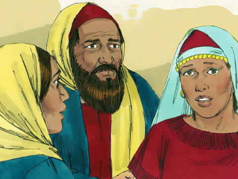
- 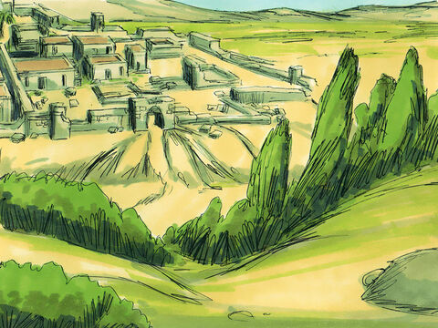
- 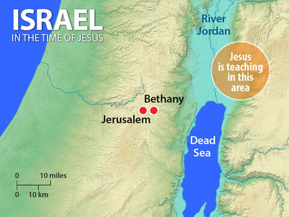
- 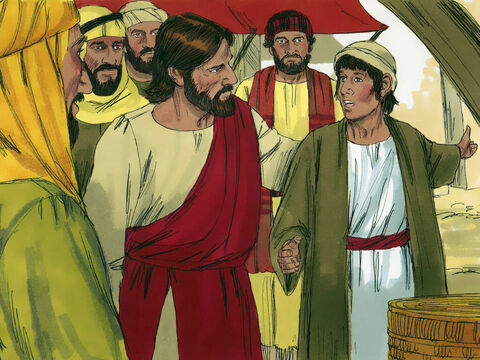
- 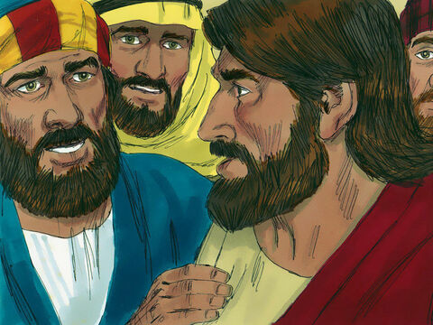
- 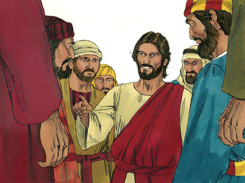
- 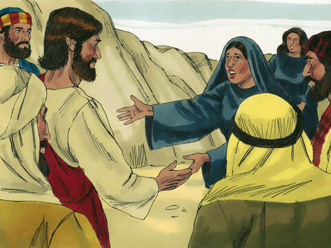
- 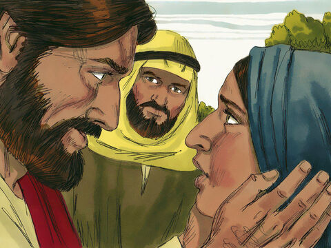
- 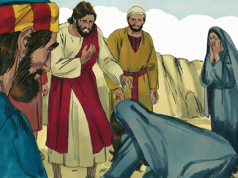
- 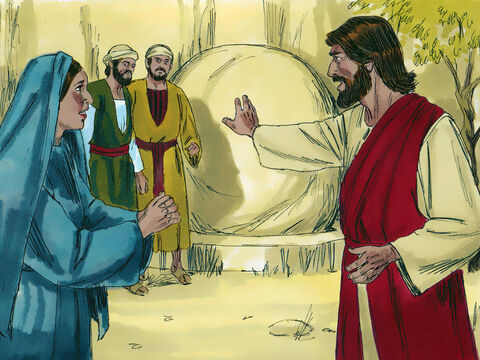
- 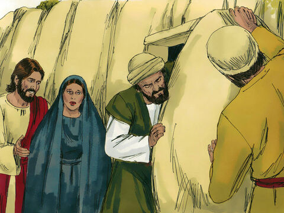
- 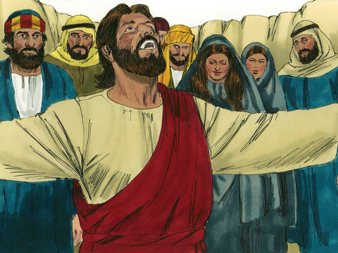

- 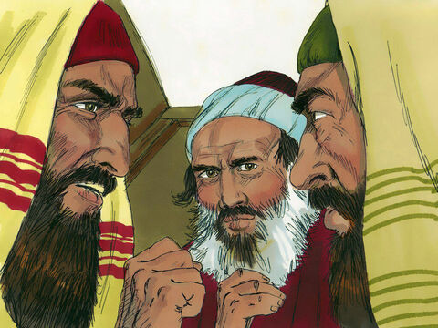